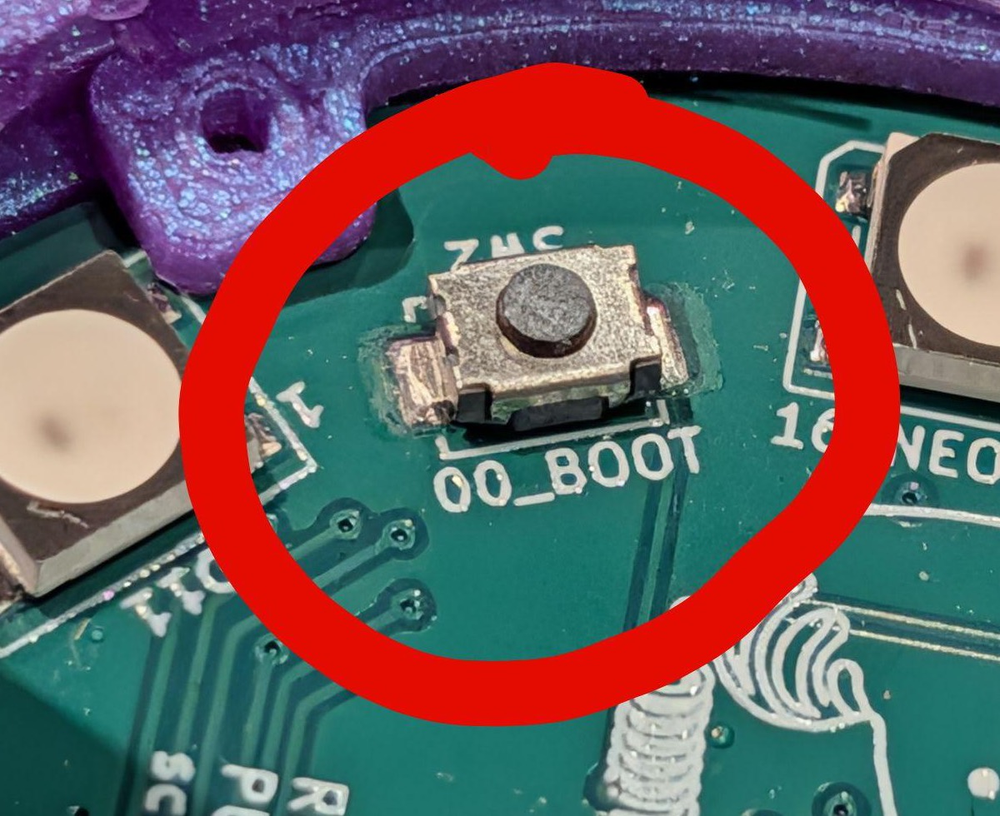
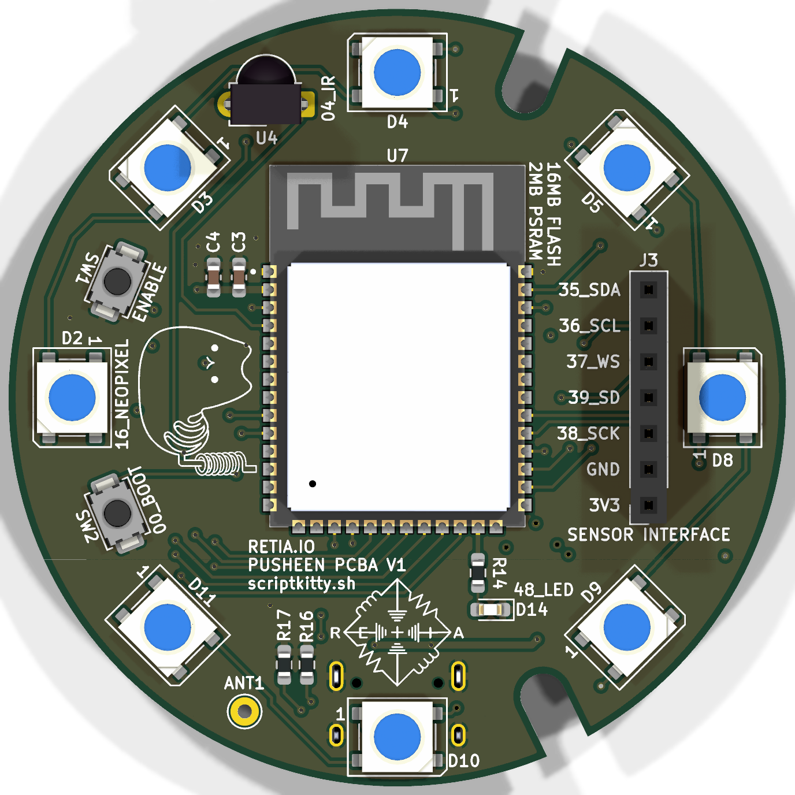
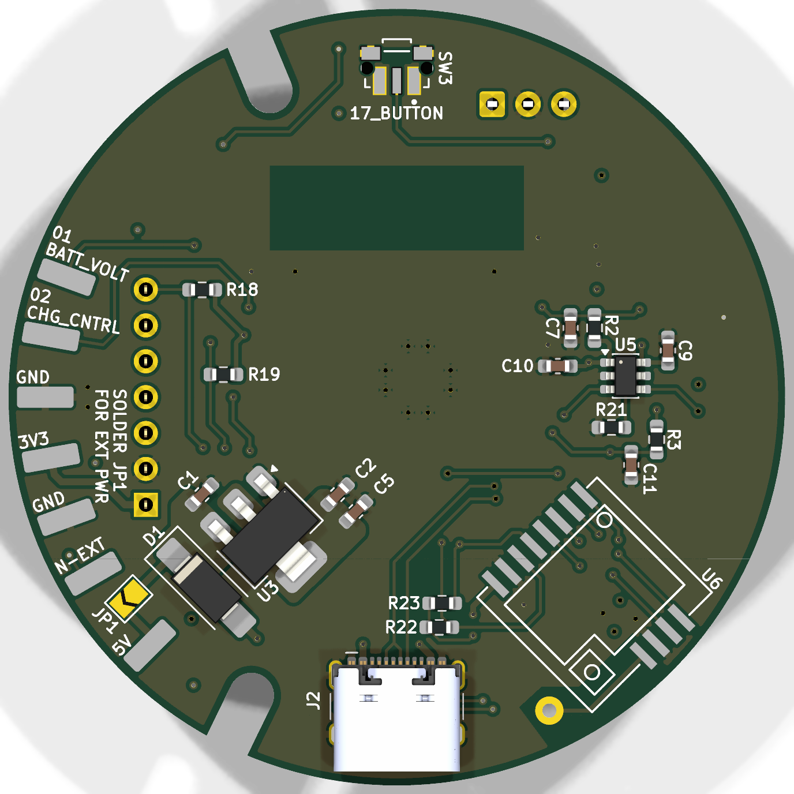
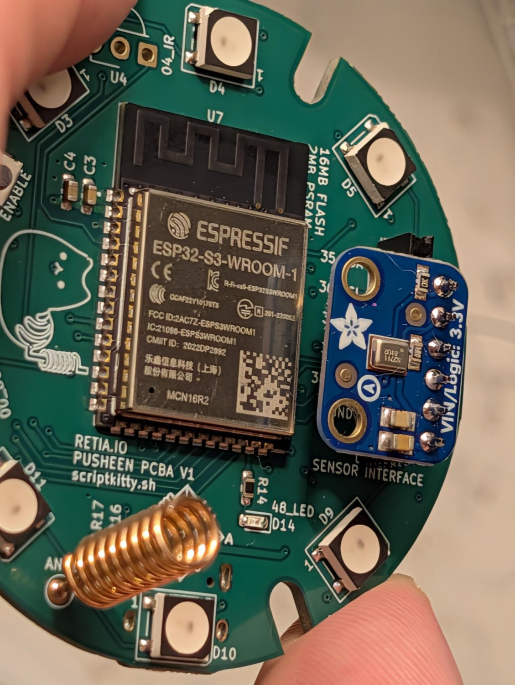
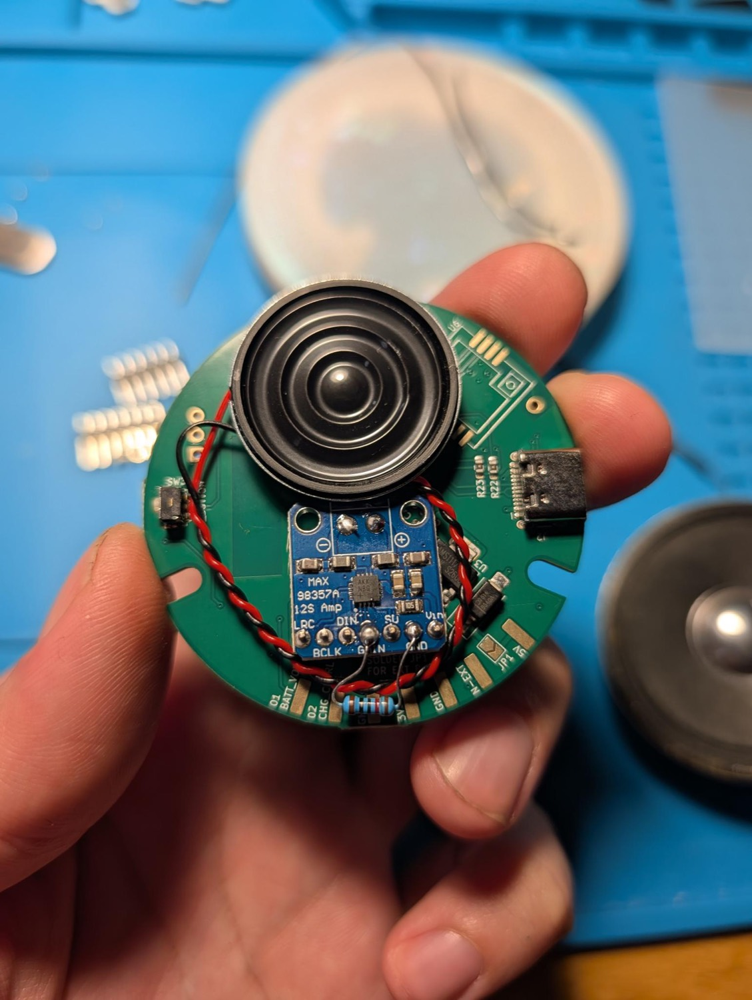
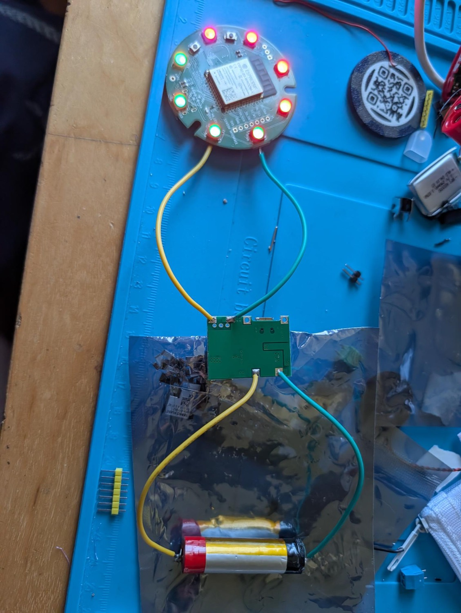
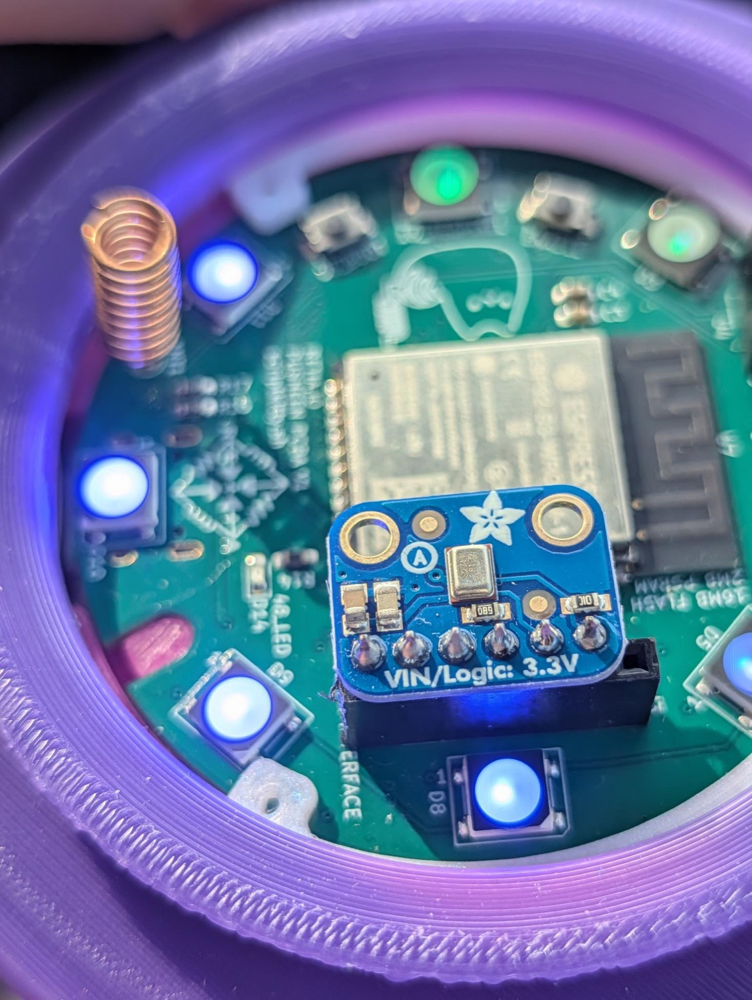

Newsheen
What if a cute cat lamp was built by hackers, and made to mod, hack, and grow with you? Meet the Newsheen! After 5 years of teaching workshops at hacker conferences, we built the Newsheen to be the easiest way to get started hacking with IoT devices.
This little cat features Bluetooth, Wi-Fi, native USB, and by default runs WLED, the open-source firmware that turns him into a flexible smart lamp. You can add a microphone, IR receiver, speaker, and even a LoRa radio to transform your cat into an audio-reactive lamp, Meshtastic radio node, internet radio speaker, and more!
// made in the USA by real catboys and catgirls.
Glow up your cat in 4 steps
Your Sheen ships as a sweet and innocent smart lamp, flashed with the WLED project. Here's how to switch, or restore any Newsheen from scratch!
-
01
Plug into USB-C.
The S3's native USB shows up as a serial port — no drivers.hint: macOS/dev/cu.usbmodem*, Linux/dev/ttyACM0, WindowsCOMx. -
02
Using LoRa? Add a radio for mesh (optional).
The Sheen ships without a LoRa radio. Meshtastic, MeshCore, RNode and Bit Pirate need a Seeed Wio-SX1262 added. Once it's soldered in place, attach a 915 MHz antenna before you transmit. -
03
Flash a personality.
Pick an image in the browser flasher and let it write. Every build is a complete.binat offset 0x0, verified against a published hash before it touches your board. -
04
Reset & connect.
After flashing is complete, unplug your board and plug it back in to run the new firmware. Many firmware projects make their own Wi-Fi AP with a setup page.hint: for WLED (the default firmware) look for a network namedWLED-APand connect with the passwordwled1234to reach the controls. Newsheen Radio makes its own captive page. Mesh builds pair to a phone or web app instead, over Bluetooth or USB.
- Stuck flashing? Hold the
BOOTbutton while you plug in USB, then release — that forces download mode. Hit CONNECT again. - Running on a battery? Feed a regulated 5 V into the
N-EXTpad and bridgeJP1— the onboard regulator makes 3.3 V from it. Never put 5 V or a raw battery on the3V3pad; that pad is the regulator's output. Details in Hardware. - Add-ons unlock builds. Newsheen Radio needs a MAX98357A amp and speaker on the J3 header; WLEDkitty's sound-reactive mode needs an I²S mic there, and its remote needs the IR receiver fitted.

Give your cat a personality
Flashing happens in your browser over Web Serial — every image is a complete .bin written at offset 0x0. Close any open serial monitors first (one client per port), plug the Sheen in, and pick a build.
bins mirrored from scriptkitty.sh; each is verified against its hash before writing.
Talk to your cat
Bit Pirate and the RNode/CLI builds speak over serial at 115200 baud. Click connect, pick the Sheen, and you're in.
HIZ> prompt. Type help for the 26 modes, or led to light the ring from the CLI.
meshtastic --port PORT --info.
rnodeconf --info PORT straight away — no setup step.
Ten lives, one puck
Every image is mirrored from scriptkitty.sh and pinned to a hash the flasher checks before writing. Hit flash to load one into the flasher above. The last three are transmit- and attack-capable and ask you to confirm authorization first.
esp32_base_puck_v2). Each build's source repo has its own PlatformIO project with the board definition if you want to roll your own.Tech specs
Stock: an ESP32-S3, 8 LEDs, a button, and USB-C. The radio, IR receiver, and mic/amp are footprints you populate to add capabilities.


Add hardware, add powers
The Sheen ships bare. Populate the sensor header, antenna pad, and IR spot to unlock the builds that need them.


External power goes to the N-EXT pad only — never wire 5 V or a battery to the 3V3 pad. That pad is the regulator's output; back-feeding it can damage the board.
The 3.3 V rail comes from an onboard regulator fed by the 5 V bus, so external power must be a regulated 5 V — a bare 3.7 V LiPo browns the board out. Run the cell through a charge-and-boost board set to 5 V: its output to the corner N-EXT pad and a GND pad, then bridge the JP1 jumper beside it — the silk reads SOLDER JP1 FOR EXT PWR. Charge through the boost board's own USB, not the Sheen's.

The shell & case files
The puck sits in a 3D-printed base under the translucent silicone lamp. The printable base, button, and retaining ring (v4), plus board STLs and the pinout, live in the Newsheen repo.

→ hardware/pinout.md — full GPIO map + build notes
→ Newsheen v1.0.0 release — ready-to-flash factory bins